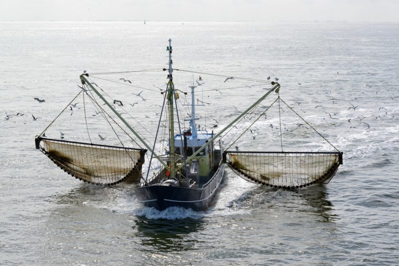
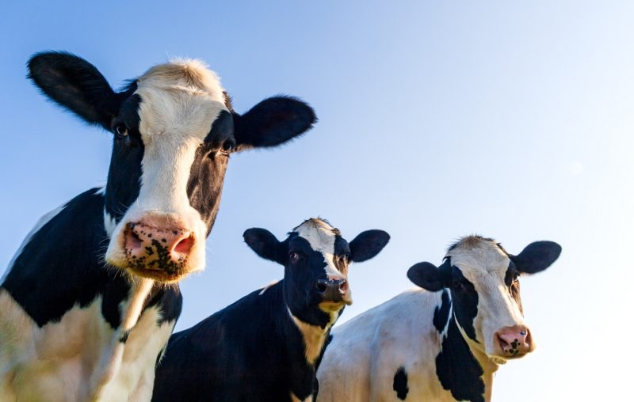
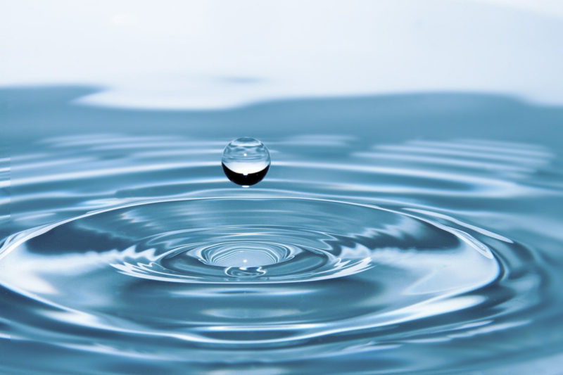
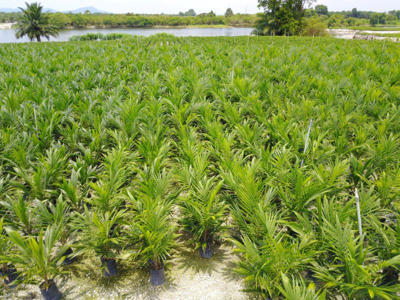
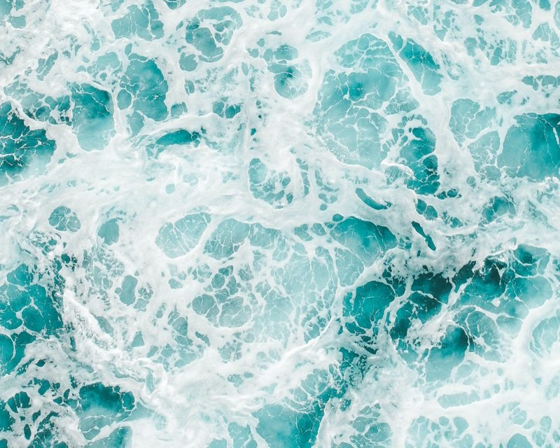
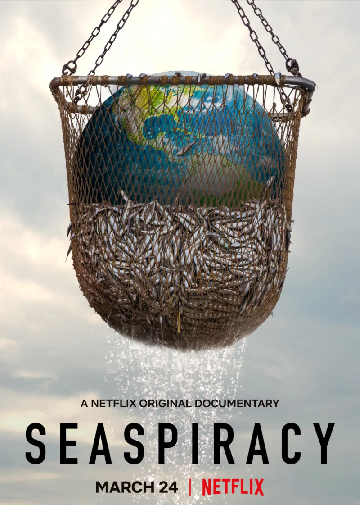
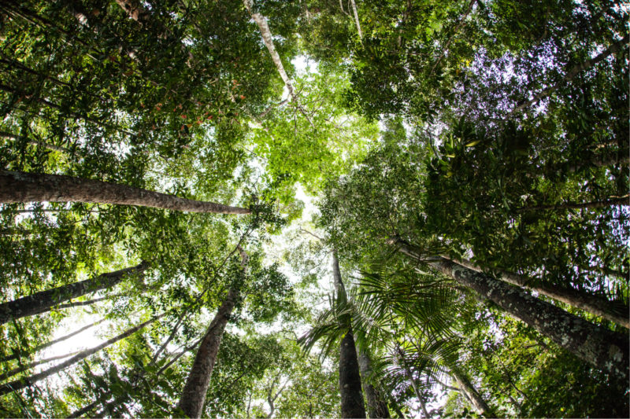
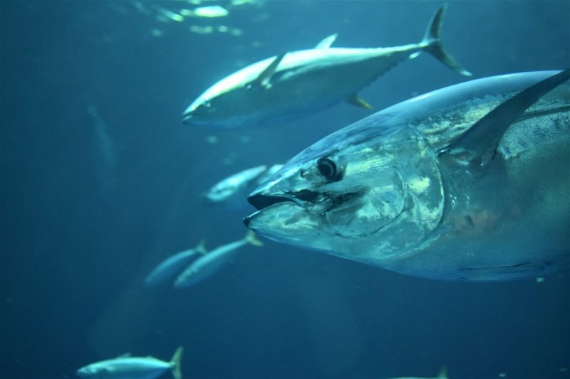

La huella de carbono de los peces

El impacto de las granjas lecheras

Ahorrar agua

¿Es el aceite de palma vegano?

Los mejores documentales sobre los océanos

Seaspiracy: reflexiones

Reducir las emisiones de los gases del efecto invernadero

Cómo comer pescado mata nuestros océanos

El avance del cambio climático en el último año